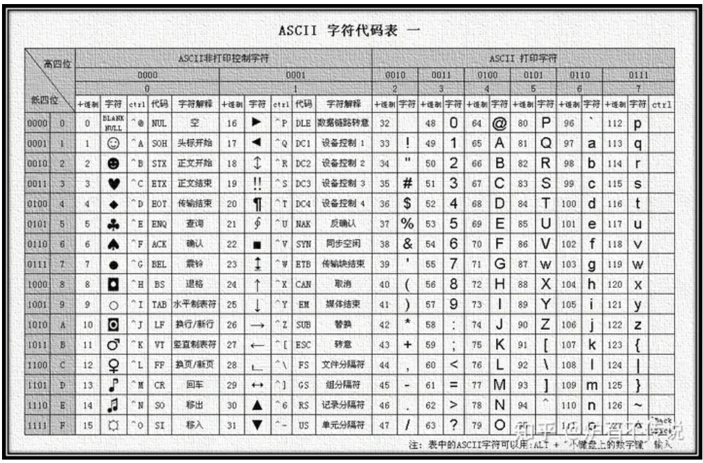

转载自：https://zhuanlan.zhihu.com/p/260192496
这篇文章主要介绍三个问题：
什么是字符、字符集、字符编码，他们的区别是什么？
什么是UTF-8、UTF-16、UTF-32，他们的区别是什么？
什么是GB2312、GBK、GB18030，他们的区别是什么？
字符（Character）：在计算机和电信技术中，一个字符是一个单位的字形、类字形单位或符号的基本信息。说的简单点字符是各种文字和符号的总称。一个字符可以是一个中文汉字、一个英文字母、一个阿拉伯数字、一个标点符号、一个图形符号或者控制符号等。
字符集（Character Set）：是指多个字符的集合。不同的字符集包含的字符个数不一样、包含的字符不一样、对字符的编码方式也不一样。例如GB2312是中国国家标准的简体中文字符集，GB2312收录简化汉字（6763个）及一般符号、序号、数字、拉丁字母、日文假名、希腊字母、俄文字母、汉语拼音符号、汉语注音字母，共 7445 个图形字符。而ASCII字符集只包含了128字符，这个字符集收录的主要字符是英文字母、阿拉伯字母和一些简单的控制字符。
另外，还有其他常用的字符集有 GBK字符集、GB18030字符集、Big5字符集、Unicode字符集等。
码点（Code Point）：有些地方翻译为码值或内码。是指在某个字符集中，根据某种编码规则将字符编码后得到的值。比如在ASCII字符集中，字母A经过ASCII编码得到的值是65，那么65就是字符A在ASCII字符集中的码点。
总结：通俗解释字符集就是把字符放到一起的一个集合。而这个集合的每一个字符都对应一个数字，叫做码点。那么，这样就建立起来数字和字符之间的索引关系。那么，某个字符在计算机中怎么表示，具体占用几个字节等等，这些就需要编码规则来解决了。这个就是字符编码，他来解决根据某个规则来将字符映射到相应的码点上面。
上个世纪60年代，美国制定了一套字符编码规则，对英语字符与二进制位之间的关系做了统一规定，这编码规则被称为ASCII编码，一直沿用至今。
ASCII编码一共规定了128个字符的编码规则，这128个字符形成的集合就叫做ASCII字符集。在ASCII编码中，每个字符占用一个字节的后面7位，最前面的1位统一规定为0。在ASCII编码中，0~31 是控制字符如换行回车删除等，32~126 是可打印字符，可以通过键盘输入并且能够显示出来。（下图是ASCII字符集中字符和码值的对应关系）

英语用128个符号编码就够了，但是用来表示其他语言，128个符号是不够的。所以当ASCII码到欧洲的时候，一些欧洲国家就决定对ASCII编码进行适当的“改造”：利用字节中闲置的最高位编入新的符号。比如，法语中的é的编码为130（二进制10000010）。这样一来，这些欧洲国家使用的编码体系，可以表示最多256个符号。这个编码统称为EASCII（Extended ASCII）。
但是欧洲的语言体系有个特点：小国家特别多，每个国家可能都有自己的语言体系，语言环境十分复杂。因此即使EASCII可以表示256个字符，也不能统一欧洲的语言环境。
为了解决上面这个问题，人们想出了一个折中的方案：在EASCII中表示的256个字符中，前128字符和ASCII编码表示的字符完全一样，后128个字符每个国家或地区都有自己的编码标准。比如，130在法语编码中代表了é，在希伯来语编码中却代表了字母Gimel (ג)，在俄语编码中又会代表另一个符号。但是不管怎样，所有这些编码方式中，0—127表示的符号是一样的，不一样的只是128—255的这一段。
根据这个规则，就形成了很多子标准：ISO-8859-1、ISO-8859-2、ISO-8859-3、……、ISO-8859-16。这些子标准适用于欧洲不同的国家地区。具体关于ISO-8859的标准请参考这个链接。这边我摘录了部分介绍。
ISO8859-1 字符集，也就是 Latin-1，是西欧常用字符，包括德法两国的字母。 ISO8859-2 字符集，也称为 Latin-2，收集了东欧字符。 ISO8859-3 字符集，也称为 Latin-3，收集了南欧字符。
至于亚洲国家的文字，使用的符号就更多了，汉字就多达10万左右。一个字节最多只能表示256种符号，肯定是不够的，必须使用多个字节表达一个符号,因此才出现了后面的Unicode字符集和GB2312等字符集。比如，简体中文常见的编码方式是GB2312，使用两个字节表示一个汉字，所以理论上最多可以表示65536个符号。
总结：ASCII码是美国制定的一套字符集，里面包含128个字符（27）所有只用了7位，最后一位默认赋值0，但是在一些欧洲国家为了满足特殊符号需求，就把最后一位也用上了就多出来了128个字符（28）。个人理解：ASCII码应该只是字符集，而不是字符编码，或者曾经是字符编码，现在大家都是广义上面说ASCII编码。
ASCII码字符集，总共才能容纳256个字符，对于全世界各国语言来说，很难全部包含在内，所有后来就出现了Unicode字符集。
Unicode字符集是一个很大的字符集合，现在的规模可以容纳100多万个符号。每个符号的编码都不一样，比如，U+0639表示阿拉伯字母Ain，U+0041表示英语的大写字母A，U+4E25表示汉字“严”。
需要注意的是，Unicode只是一个字符集，它只规定了符号的二进制代码，却没有规定这个二进制代码应该如何编码如何存储。这就造成了两个问题：
如何才能区别Unicode和ASCII？计算机怎么知道三个字节表示一个符号，而不是分别表示三个符号呢？
我们已经知道，英文字母只用一个字节表示就够了，如果unicode统一规定，每个符号用三个或四个字节表示，那么每个英文字母前都必然有二到三个字节是0，这对于存储来说是极大的浪费，文本文件的大小会因此大出二三倍，这是无法接受的。
为了解决Unicode字符集存在的问题，就出现了UTF(Unicode Transformation Formats)系列的编码规则。UTF编码规则具体规定了Unicode字符集中的字符是如何编码的。
总结：Unicode是一个很大的字符集，这个字符集只规定了这个字符集中每个字符对应的码值是多少，但是这个字符集并没有规定具体的编码规则，具体的编码规则有UTF系列的编码规则实现。
互联网的普及，强烈要求出现一种统一的编码方式。UTF-8就是在互联网上使用最广的一种Unicode的实现方式。其他实现方式还包括UTF-16和UTF-32，不过在互联网上基本不用。重复一遍，这里的关系是：UTF-8编码是Unicode的实现方式之一。
UTF-8（8-bit Unicode Transformation Format）是一种针对Unicode的可变长度字符编码规则，又称万国码。由Ken Thompson于1992年创建。现在已经标准化为RFC 3629。UTF-8用1到4个字节编码Unicode字符。用在网页上可以统一页面显示中文简体繁体及其它语言（如英文，日文，韩文）。
UTF-8最大的一个特点，就是它是一种变长的编码方式。它可以使用1~4个字节表示一个符号，根据不同的符号而变化字节长度（UTF-8编码可以容纳221个字符，总共200多万个字符）。
UTF-8的编码规则很简单，只有二条：
对于单字节的符号，字节的第一位设为0，后面7位为这个符号的unicode码。因此对于英语字母，UTF-8编码和ASCII码是相同的。
对于n字节的符号（n>1），第一个字节的前n位都设为1，第n+1位设为0，后面字节的前两位一律设为10。剩下的没有提及的二进制位，全部为这个符号的unicode码。
下表总结了编码规则，字母x表示可用编码的位。
| Unicode符号范围 | UTF-8编码方式 |
|---|---|
| UTF字节数 (十六进制) | （二进制） |
| 一个字节 0000 0000-0000 007F | 0xxxxxxx |
| 两个字节 0000 0080-0000 07FF | 110xxxxx 10xxxxxx |
| 三个字节 0000 0800-0000 FFFF | 1110xxxx 10xxxxxx 10xxxxxx |
| 四个字节 0001 0000-0010 FFFF | 11110xxx 10xxxxxx 10xxxxxx 10xxxxxx |
下面， 还是以汉字“严”为例，演示如何实现UTF-8编码。
已知“严”的unicode是\u4E25（100111000100101），根据上表，可以发现4E25处在第三行的范围内（0000 0800-0000 FFFF），因此“严”的UTF-8编码需要三个字节，即格式是“1110xxxx 10xxxxxx 10xxxxxx”。然后，从“严”的最后一个二进制位开始，依次从后向前填入格式中的x，多出的位补0。这样就得到了，“严”的UTF-8编码是“11100100 10111000 10100101”，转换成十六进制就是E4B8A5。
再次强调一个概念：就是Unicode是一个字符集，这个字符集为世界上所有的字符定义了一个唯一编码。其仅仅规定了每个符号的二进制代码，没有制定细化的存储规则。UTF-8、UTF-16、UTF-32才是Unicode的存储格式定义。上面已经简单介绍了UTF8编码规则，那么这个规则和UTF16、UTF32等规则有什么区别呢？
在将UTF8和UTF16、UTF32的区别之前，再先科普两个名词：UCS-2和UCS-4。
Unicode是为整合全世界的所有语言文字而诞生的。任何文字在Unicode中都对应一个值， 这个值称为代码点（code point，也称码值）。代码点的值通常写成 U+ABCD 的格式。而文字和代码点之间的对应关系就是UCS-2（Universal Character Set coded in 2 octets）。顾名思义，UCS-2是用两个字节来表示代码点，其取值范围为 U+0000～U+FFFF。
为了能表示更多的文字，人们又提出了UCS-4，即用四个字节表示代码点。它的范围为 U+00000000～U+7FFFFFFF，其中 U+00000000～U+0000FFFF和UCS-2是一样的。
要注意，UCS-2和UCS-4只规定了代码点和文字之间的对应关系，并没有规定代码点在计算机中如何存储。规定存储方式的称为UTF（Unicode Transformation Format），也就是我们上面提到的UTF8格式和下面将要提到的UTF16、UTF32格式。
UTF-16由RFC2781规定，它使用两个字节来表示一个代码点。不难猜到，UTF-16是完全对应于UCS-2的，即把UCS-2规定的代码点通过Big Endian或Little Endian方式直接保存下来。UTF-16包括三种：UTF-16，UTF-16BE（Big Endian）和UTF-16LE（Little Endian）。UTF-16BE和UTF-16LE不难理解，而UTF-16就需要通过在文件开头以名为BOM（Byte Order Mark）的字符来表明文件是Big Endian还是Little Endian。BOM为U+FEFF这个字符。其实BOM是个小聪明的想法。由于UCS-2没有定义U+FEFF，因此只要出现 FF FE 或者 FE FF 这样的字节序列，就可以认为它是U+FEFF，并且可以判断出是Big Endian还是Little Endian。
BOM（Byte Order Mark）用来放在文档的开头告诉阅读器该文档的字节序。UTF-8不需要BOM来表明字节顺序，但可以用BOM来表明编码方式。字符"ZERO WIDTH NO-BREAK SPACE"的UTF-8编码是EF BB BF。所以如果接收者收到以EF BB BF开头的字节流，就知道这是UTF-8编码了。UTF-16才需要加BOM。因为它是按Unicode 顺序编码，在BMP范围内是二字节，需要识别是大或小字节序。
这边顺便科普下大小端的概念。
低字节序(Little Endian)和高字节序(Big Endian)
低字节序和高字节序只是一个关于在内存中存储和读取一段字节（被称作words）的约定。这意味着当你让计算机用UTF-16把字母A（占两个字节）存在内存中时，使用哪种字节序方案决定了你把第一个字节放在第二个字节的前面还是后面。这么说有点不太容易懂，让我们来看一个例子：当你使用UTF-16存下某段内容时，在不同的系统中它的后半部分可能是这样的：
00 68 00 65 00 6C 00 6C 00 6F（高字节序，高位字节被存在前面） 68 00 65 00 6C 00 6C 00 6F 00（低字节序，低位字节被存在前面）
字节序方案只是一个微处理器架构设计者的偏好问题，例如，Intel使用低字节序，Motorola使用高字节序。
举个例子。“ABC”这三个字符用各种方式编码后的结果如下：
| 编码类型 | 码值 |
|---|---|
| UTF-16BE | 00 41 00 42 00 43 |
| UTF-16LE | 41 00 42 00 43 00 |
| UTF-16(Big Endian) | FE FF 00 41 00 42 00 43 |
| UTF-16(Little Endian) | FF FE 41 00 42 00 43 00 |
| UTF-16(不带BOM) | 00 41 00 42 00 43 |
UTF-32用四个字节表示代码点，这样就可以完全表示UCS-4的所有代码点，而无需像UTF-8那样使用复杂的算法。 与UTF-16类似，UTF-32也包括UTF-32、UTF-32BE、UTF-32LE三种编码，UTF-32也同样需要BOM字符。
文本编辑器怎么知道文本的编码？
当一个软件打开一个文本时，它要做的第一件事是决定这个文本究竟是使用哪种字符集的哪种编码保存的。软件一般采用三种方式来决定文本的字符集和编码：
检测文件头标识（BOM）
EF BB BF UTF-8 FE FF UTF-16/UCS-2, big endian FF FE UTF-16/UCS-2, little endian FF FE 00 00 UTF-32/UCS-4, little endian. 00 00 FE FF UTF-32/UCS-4, big-endian.
软件自己根据编码规则猜测当前文件的编码
提示用户自己输入当前文件的编码
总结：UTF-8、UTF-16、UTF-32只是一种编码格式，不是字符集，是用来规范字符集存储用的。其中UTF-8是变成的编码规范，而UTF-16是固定用两个字节表示一个码值，UTF-32是固定使用四个字节表示一个码值。
GB2312编码是第一个汉字编码国家标准，是由中国国家标准总局1980年发布，1981年5月1日开始实施的一套国家标准，标准号是GB2312—1980。GB2312编码适用于汉字处理、汉字通信等系统之间的信息交换，通行于中国大陆；新加坡等地也采用此编码。中国大陆几乎所有的中文系统和国际化的软件都支持GB2312。GB2312编码共收录汉字6763个，其中一级汉字3755个，二级汉字3008个。同时，GB2312编码收录了包括拉丁字母、希腊字母、日文平假名及片假名字母、俄语西里尔字母在内的682个全角字符。
GB2312是对ASCll码的扩展，占用两个字节。具体的编码规则这边就不介绍了，感兴趣的读者可以参考这篇博客。
GB2312能表示的汉字只有6000多个，但是中国的汉字有10万之多，所以GB2312字符集还是不够用，于是GBK出现了。GBK是对GB1212的扩展，也是占用2个字节，GBK不再要求低字节一定是127号之后的内码，只要第一个字节是大于127就固定表示这是一个汉字的开始，不管后面跟的是不是扩展字符集里的内容。GBK 包括了 GB2312 的所有内容，同时又增加了近20000个新的汉字（包括繁体字）和符号。
GB18030采用变长编码，可以是1个字节、2个字节和4个字节。是对GB2312和GBK的扩展，完全兼容两者。
通过上面介绍，可以发现GBK、GB2312和GB18030字符集主要是对中文汉字的编码，同时兼顾了一些其他常用符号的编码。其中：
GB2312编码方案出现最早，占用2个字节，但是能表示的字符较少
GBK也占用2个字节，采用了不同的编码方式，对GB2312进行了扩展，增加了近20000个新的汉字（包括繁体字）和符号
GB18030采用变长编码，可以是1个字节、2个字节和4个字节。是对GB2312和GBK的扩展，完全兼容两者
总结：GB2312是我们中文自己的字符集，是国家标准。由于不能包含全部汉字，后面有扩展出现了GBK，GBK是固定长度编码的字符集，后面又出现了变长编码的GB18030字符集。